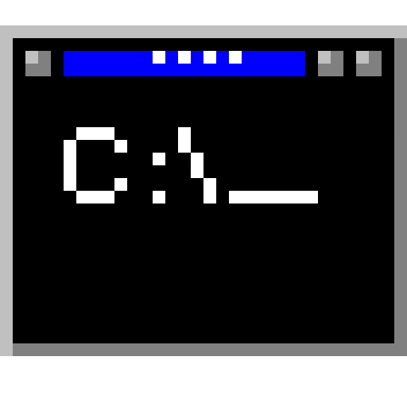

waifu Modular BIOS v4.51PG, An Energy Star Ally
Copyright (C) 1984-98, Waifu Inc.
Main Processor : 486DX2-66
Video Adapter : ASCII Graphics Adapter
Memory Test:
0
Detecting Primary Master ... WAIFU-HD 20GB
Detecting Primary Slave ... None
Detecting Secondary Master ... CD-ROM Drive
Detecting Secondary Slave ... None
About Me
Links
Scripts
Repos
Friends

Terminal
Calculator
waifuOS
98 SE
Programs
▶
waifuOS Terminal
Scripts
Repos
Friends
Links
Calculator
About Me
My GitHub
System Info (neofetch)
Restart System...
Start
00:00